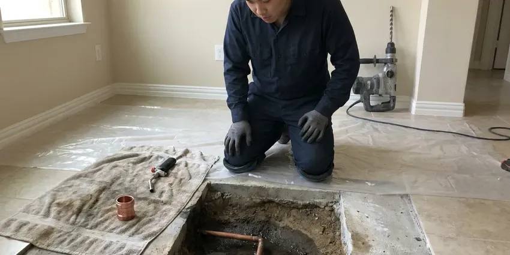

Water Heater Repair in Kannapolis, NC
We repair gas, electric and tankless water heaters across Kannapolis, NC from fully stocked trucks and a clear price before any work starts.
- Gas, Electric and Tankless
- Flat Price Up Front
- Parts Stocked on Trucks
- Local Crews

Get Your Hot Water Back Fast in Kannapolis, NC.
A faulty heater gets worse, not better, so call HFN Plumbing and get it looked at.
Fast, Honest Water Heater Repair in Kannapolis, NC
HFN Plumbing fixes water heaters to last, not to limp along until next month. Our technicians know what North Carolina homes throw at a tank, from hard-water scale to attic heat. Safety comes with every repair. That means a gas leak test on the connections and a look at the vent draft, so the heater runs safely as well as hot.
Our expertise includes:
- Diagnose burner and pilot problems
- Repair every major water heater brand
- Upper and lower element testing on electric tanks

Additional Plumbing Repair Services in Kannapolis, NC
We offer expert plumbing repair services across Kannapolis, NC to fix leaks, restore flow, and keep your system running smoothly.


Customers
Why Choose HFN Plumbing for Water Heater Repair in Kannapolis, NC?
Local plumbers at HFN Plumbing understand North Carolina water heater problems, mostly sediment and heat. Diagnosis is quick. Most calls take under an hour to figure out, because we test the burner, the controls and the venting in the same order every time.
- Licensed Plumbers, Our technicians are licensed, insured and current on new heater controls.
- Trained Plumbers, Our plumbers work on water heaters daily.
- Water Know-How, We understand North Carolina water conditions and how they shorten heater life.
Citywide Coverage
Service vans stay on the road across Kannapolis for urgent water heater calls. A broken heater cannot wait, and a nearby truck shortens the wait.
Experienced Team
Daily repair work teaches the quirks of each brand, like Rheem pilot assemblies and Bradford White vapor sensors. That experience means faster diagnosis and fewer guesses.
Safety-First Approach
Gas connections are leak tested after any repair, and electric units are checked for proper voltage and grounding. A missing drain pan or expansion tank gets pointed out. You get the fix and the price explained, and the choice stays yours with no pressure to add it today.
Trusted Certified Kannapolis Plumbing Services Professionals
At HFN Plumbing, we are proud to offer certified plumbing services throughout Kannapolis, NC. Credentials matter in this trade. Every repair, install and maintenance visit follows strict safety and quality rules, and the plumbers doing the work carry recognized industry credentials.
Call Us Now PHCC Plumbing Contractor Recognition
PHCC Plumbing Contractor Recognition Better Business Bureau (BBB) Accreditation
Better Business Bureau (BBB) Accreditation Angi Certified Pro
Angi Certified Pro ISO 9001 Quality Management Certification
ISO 9001 Quality Management CertificationWater Heater Repair Work in Kannapolis, NC
Gas Control and Thermocouple Repair in Kannapolis
Thermocouples, flame sensors, igniters and gas control valves cause most gas heater failures. We test each one, clean the burner and pilot assembly and check draft at the vent. A pilot that lights and then goes out a few seconds later usually points to a weak thermocouple or a clogged flame arrestor screen. Most are done in under two hours.

Electric Water Heater Element Repair in Kannapolis
Lukewarm water or hot water that runs out in five minutes usually means a burned-out element or a stuck thermostat. Each element gets an ohm reading. A shorted element will trip the breaker, while an open one just sits there cold, and the readings tell us which one is which. Parts for most tanks ride on the truck.
Tankless Descaling in Kannapolis
Navien, Rinnai, Noritz and Rheem tankless units show error codes on the front panel that help us narrow the problem quickly. Scale, a dirty inlet screen, a bad flow sensor or a weak igniter cause most failures. We descale with a pump and approved solution. A large share of homes across the state rely on private wells, and iron and manganese often leave orange or dark stains on fixtures.
No Hot Water Diagnostics in Kannapolis
Diagnosis starts with fuel. Is the gas on, is the breaker on, is the pilot lit? From there we test the thermostat, element or gas valve one at a time and recommend the cheapest repair that will actually hold up. Simple checks first.
Same-Day Emergency Heater Repair in Kannapolis
A tank that is actively leaking or a relief valve that keeps discharging needs prompt attention. We answer emergency calls day and night. The plumber shuts down the unit safely, stops the water and repairs it on the spot whenever the tank is sound. Replacement is usually possible the same or next day.
Water Heater Brands We Service in Kannapolis
Rheem, Bradford White, State and American Standard are the tank brands we see most, with Navien and Rinnai leading on tankless. Each brand has its own weak spots. Our plumbers know them and carry the matching thermocouples, valves and sensors. A Bradford White with a tripped vapor sensor, for example, can look like a simple pilot outage.
Standard Tank Water Heater Repair in Kannapolis
Most homes still run a 50-gallon tank. Thermostats, elements, anodes and relief valves make up most tank repairs. A good flush takes care of a lot of noise and slow recovery problems on its own, no parts required.

Emergency Water Heater Repair in Kannapolis, NC
Water heater emergencies do not wait for business hours. A tank pouring water onto a finished floor or a relief valve that will not stop discharging gets a plumber right away. HFN Plumbing runs emergency repair in Kannapolis, NC day and night. Shut the cold supply valve first.
Water Heater Repair Near Me in Kannapolis, NC
Close by is the point. HFN Plumbing keeps plumbers working across Kannapolis and the rest of North Carolina, which keeps the drive time down. You should expect an accurate diagnosis and a lasting repair from a local plumber who lives down the road.
A large share of homes across the state rely on private wells, and iron and manganese often leave rusty or dark stains on fixtures. Plumbers who work in this area every day know exactly how that water and the heat in a closed garage affect a tank. We match flushing schedules, anode choices and expansion tanks to your water. A repair that lasts is the goal.
HFN Plumbing at a Glance
- Licensed and insured plumbers serving Kannapolis, NC
- Same-day appointments and 24/7 emergency response
- Upfront, flat-rate pricing before work begins
- 4.8-star rated by 840+ North Carolina customers
Kannapolis Map
Kannapolis Information
- Population
- 59,321
- Area codes
- 704/980/336
- Service area
- Kannapolis and communities within 40 miles
- Nearby
- Concord, Mooresville, Huntersville, Charlotte
High humidity can rust exposed metal pipe and fittings under homes, so crawlspace plumbing deserves a regular look. A water heater in Kannapolis sees its heaviest load in the cold months, and a worn part shows up first then.
Expert Services
Call HFN Plumbing for honest, reliable plumbing from people who know the trade in Kannapolis, NC.
Our Specialized Plumbing Services in Kannapolis, NC
At HFN Plumbing, we handle the full list of plumbing services across Kannapolis, NC. From leak detection to full system installs, our team works fast and charges fair prices on homes and commercial properties alike. Explore our core services below:


From Cold Shower to Hot Water in Kannapolis, NC
Diagnosis first, then the repair. Every water heater call in Kannapolis, NC runs that way.
Describe What It Is Doing
Call (980) 364-4317 and tell us what the heater is doing, including the brand and age if you know them. Same-day visits are typical.
Test and Diagnose
Your plumber tests the burner or elements, the controls, the venting and the tank. A flat price comes with a straight answer on how long the tank has left.
Repair and Verify
We replace the failed part and run the heater through a full cycle. Gas connections are leak tested and the relief valve is checked before we leave.
Frequently Asked Questions About Water Heater Repair in Kannapolis
Expect $150 to $800 in most cases. A thermostat swap sits at the low end. A gas valve or a tankless repair with several new sensors lands near the top of the range.
Popping, rumbling or hissing usually means sediment on the tank bottom. Water caught under that layer boils and pops.
Rheem, Bradford White, State, Noritz, Rinnai and Bosch are all on the list, and HFN Plumbing repairs most other brands too. Our techs know the parts and procedures for each.
No hot water is the obvious one. Water that never gets hot enough, rumbling or popping from the tank and water around the base are the others to watch. Rust-colored or sulfur-smelling hot water also points to a problem inside the tank.
Age, repair cost and the condition of the tank decide it. A tank over ten years old, one that keeps breaking or a repair over half the cost of a new heater usually means replace. You get both numbers to compare.
Lukewarm water and a puddle at the base are the two signs people ignore longest. Discolored or smelly water and popping sounds also mean it is time for a look.
Bacteria in the water react with the magnesium anode rod. A new aluminum zinc or powered anode plus a flush typically ends the smell.
A large share of homes across the state rely on private wells, and iron and manganese often leave orange or dark stains on fixtures. With hard water, once a year is a good rule for tank heaters. Tankless units should be descaled about once a year too, or more often without a softener.
Hear From Customers Who Hired Our Plumbing Experts

Rachel N.
Hard water was leaving white crust on every faucet and our dishwasher was struggling. The tech tested the water, recommended a softener sized for a family of five, and installed it with a bypass valve in one afternoon. The spots on our glasses are gone.
Water Softener · Gastonia, NCLisa C.
Water was pouring out from under the washing machine on a holiday weekend. HFN Plumbing talked me through closing the valves over the phone and had a plumber at the house within ninety minutes. It was a burst fill hose.
Emergency Plumbing · Charlotte, NC
Sofia M.
Two new toilets went in during one visit. The tech set them on new wax rings and swapped the old supply lines. He also noticed our bathroom faucet dripping and replaced the cartridge while he was there. No mess left behind.
Toilet Installation · Hickory, NCJessica T.
We were adding a gas range in a kitchen remodel and needed a new line run from the meter. The plumber pulled the permit, ran the pipe through the crawl space, and had it inspected and approved within the week.
Gas Line Repair · Kannapolis, NC
Mark T.
The floor drain in our office break room backed up every few weeks. The plumber ran a cable, then put a camera down and found roots at a joint about thirty feet out. Seeing it on the screen made the decision easy.
Drain Cleaning · Huntersville, NC
Karen W.
After our third pinhole leak in copper, we stopped patching. HFN Plumbing gave us a written plan room by room and repiped the house in PEX while we stayed in it. The crew covered our floors every morning and cleaned up every night.
Repiping · Charlotte, NC